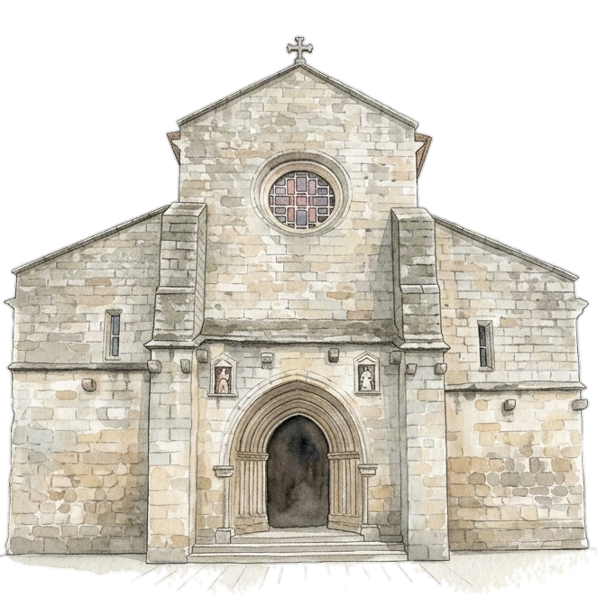
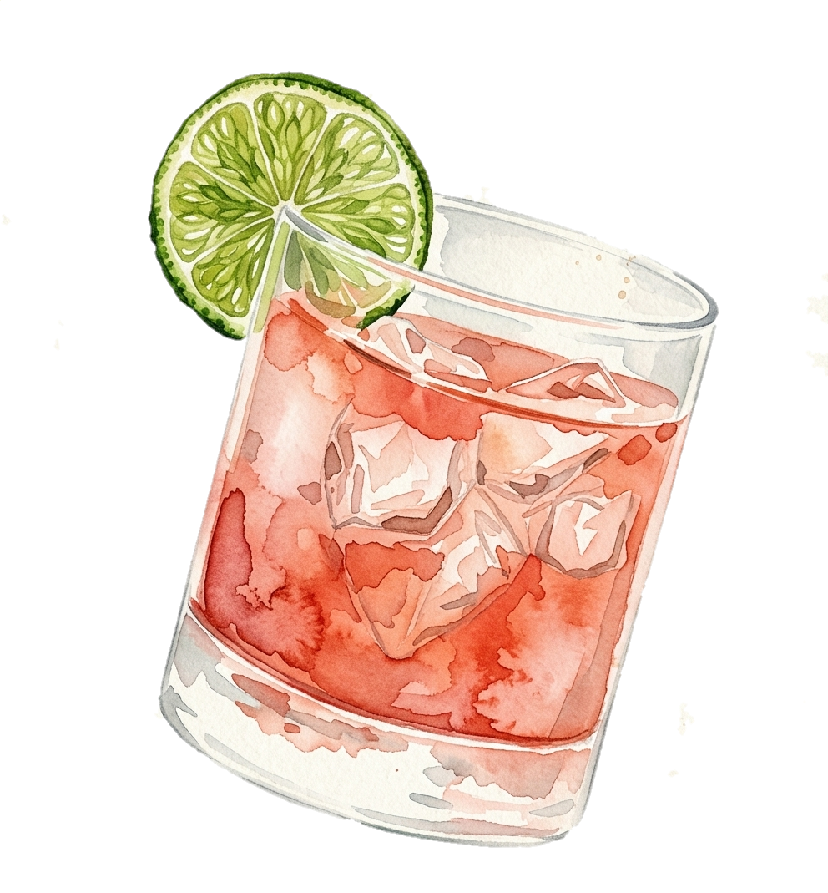

Patricia & André
VILA REAL, PORTUGAL 2026
VILA REAL, PORTUGAL 2026

28.08.2026
OUR WEDDING DAY
O NOSSO CASAMENTO
Friday 28th August 2026
Sexta-feira, 28 de agosto de 2026
Join us as we get married in a religious ceremony
at the Sé Catedral de Vila Real.
Wedding reception to follow.
Junte-se a nós para celebrarmos o nosso matrimónio numa cerimónia religiosa na Sé Catedral de Vila Real.
Copo de água a seguir.
Ceremony
Cerimónia
14:00
Sé Catedral de Vila Real
Av. Carvalho Araújo 89
5000-657 Vila Real, Portugal
14:00
Sé Catedral de Vila Real
Av. Carvalho Araújo 89
5000-657 Vila Real, Portugal
Canapés & Cocktails
Canapés & Cocktails

16:00 - 19:00
After the wedding ceremony,
the party begins with an open bar and appetisers at the reception venue
16:00 - 19:00
Após a cerimónia, começa a festa com bar aberto e aperitivos na quinta
Dinner & Dancing
Jantar & Baile
19:00 - 02:00
The celebrations will continue with a sit-down dinner and after party
19:00 - 02:00
As celebrações continuam com o jantar e baile ao longo da noite
RSVP
Your response is requested as soon as you can, no later than 1st July 2026.
Confirme a presença (RSVP)
Precisamos da confirmação final até ao dia 1 de julho de 2026.
FREQUENTLY ASKED QUESTIONS
PERGUNTAS FREQUENTES
What time should I arrive? A que horas devo chegar?
The ceremony will begin at 14:00 so please arrive at least 30 minutes before to take your seat. Don’t be late!
A cerimónia começa às 14:00. Por favor, chegue pelo menos 30 minutos antes para ocupar o seu lugar. Não se atrase!
Where can I park? Onde posso estacionar?
Parque Carvalho Araújo car park is 2 minutes from the Cathedral.
There is ample parking available at the reception venue (Quinta).
Estacionamento no Parque Carvalho Araújo fica a 2 minutos da Catedral.
Há estacionamento na Quinta.
Are the wedding ceremony and the reception at the same venue? A cerimônia e o copo de água são no mesmo local?
No. Please travel to the Cathedral for the ceremony. We want to keep our reception venue a surprise! So, after the wedding ceremony, please follow the bride & groom to the venue (a short drive).
Não. Por favor, dirija-se à Catedral para a cerimônia. Queremos que o local do copo de agua seja uma surpresa! Por isso, após a cerimónia, acompanhem os noivos até ao local (uma curta viagem de carro).
What's the dress code? Qual é o 'dress code'?
Men: Suits preferably. Please no jeans or trainers.
Ladies: Cocktail attire, formal dresses. No white.
Senhores: Fato de preferência. Pedimos que evitem calças de ganga e tênis.
Senhoras: Pedimos que usem vestidos. Por favor, não use branco.
Can I bring a plus one? Posso levar convidados extras?
No. We want to celebrate with our closest family and friends. If you haven't been given a plus one then please do not bring any extra guests.
Não. Queremos celebrar com os nossos familiares e amigos mais próximos. Por favor, não traga convidados extras.
Onde posso ficar?
A nossa recomendação para dormida é o Hotel Miracorgo ou Douro Village em Vila Real, ambos ficam apenas a 4 minutos da Sé Catedral.
Any international travel tips?
The closest airport is Porto (OPO), which is roughly a 1 hour drive from Vila Real.
If you’re not renting a car for the trip, when you arrive in Portugal, there are regular coaches
between Porto Campanhã coach station and Vila Real which will take you directly to the city.
We recommend staying at Hotel Miracorgo or Douro Village in Vila Real, both only a short walk from the ceremony venue,
but more accommodation options are available.
As for general travel in Vila Real, there are local taxis and both Uber and Bolt are available
(however, we're not sure how regular these will be in the summer to be honest!)
If you are staying close to the city centre, there will be plenty of cafes and restaurants within walking distance.
Feel free to ask us for extra tips and recommendations, we're happy to share!
Do you have a gift registry? Existe uma lista de presentes?
We don’t have a gift registry but if you would like to give us a wedding gift, a cash contribution towards our honeymoon would be appreciated!
Não temos lista de presentes mas se quiser contribuir com dinheiro para a nossa lua de mel como prenda, agradecemos!
What if I miss the RSVP deadline? E se falhar o prazo de confirmação de presença (RSVP)?
Please make sure to submit your RSVP by 1st July 2026. If we don't receive your RSVP by this date, we will mark you as not attending.
Pedimos que confirme a sua presença até ao dia 1 de julho de 2026. Caso não recebermos a sua confirmação até esta data, consideraremos a sua ausência.
We can't wait to celebrate with you!
Estamos ansiosos para celebrar com vocês!
Vila Real, Portugal | 28.08.2026

Made with love by Patricia and andre